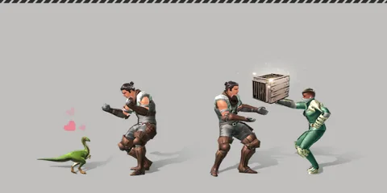
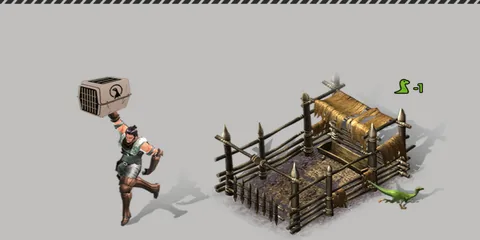

หน้าแรก › จับและเลี้ยงสัตว์
การจับสัตว์ ใช้ได้
ตีสัตว์ให้เลือดต่ำกว่า 30% หรือให้มึน แล้วใช้สมุนไพรฝึกสัตว์จับ — จากนั้นฝึกในคอกให้เชื่องก่อนสร้างสายใย
สัตว์ป่าเกือบทุกชนิดจับมาเป็นคู่หูได้ ขั้นตอนคือ ตีให้อ่อนแรง → จับด้วยสมุนไพรฝึกสัตว์ → ได้สายบังเหียน → ฝึกในคอกให้เชื่อง → สร้างสายใย แล้วจะได้ สัตว์เลี้ยง ที่พาเดินทาง ขี่ ช่วยสู้ และผลิตของได้

ทำอะไรได้บ้าง
- จับสัตว์ป่าที่เลือดเหลือ ≤ 30% หรือ กำลังมึน/ล้มอยู่ (เลือดเท่าไรก็ได้)
- ตีด้วยอาวุธประเภททุบหรือท่าหนักให้สัตว์มึนเร็ว
- ฝึกสัตว์ที่จับมาในคอกฝึกสัตว์ แล้วสร้างสายใยเป็นสัตว์เลี้ยง
สิ่งที่ต้องมี ใช้ได้
| ไอเทม | เลเวล | ใช้ทำอะไร |
|---|---|---|
| สมุนไพรฝึกสัตว์ระดับขั้นต้น | 1–19 | เครื่องมือจับ — ต้องอยู่ในกระเป๋า |
| สมุนไพรฝึกสัตว์ระดับมาตรฐาน | 20–39 | 〃 |
| สมุนไพรฝึกสัตว์ระดับสูง | 40–60 | 〃 |
| คอกฝึกสัตว์ชั่วคราว / คอกฝึกสัตว์ขนาดเล็ก | — | ฝึกสัตว์ที่จับมาให้เชื่อง |
- เครื่องมือจับเสียความทนทาน 3 ต่อการลองจับหนึ่งครั้ง (สำเร็จหรือไม่ก็ตาม) · กดจับตอนสัตว์ยังไม่เข้าเงื่อนไข เครื่องมือไม่สึก
วิธีจับ ใช้ได้
- ตีสัตว์จนเลือดเหลือ ≤ 30% หรือจนมันมึน/ล้ม (ดูหัวข้อเกจมึนด้านล่าง)
- เล็งสัตว์ แล้วกดปุ่ม จับ — ปุ่มเปิดให้กดเสมอเมื่อมีเครื่องมือ เซิร์ฟเป็นคนตรวจเงื่อนไข
- ยืนนิ่ง 3 วินาทีระหว่างแถบเวลา (ขยับ = ยกเลิก)
- สำเร็จ → สัตว์หายจากโลกและได้ สายบังเหียน ของสัตว์ตัวนั้นเข้ากระเป๋า · ไม่สำเร็จ → ขึ้นข้อความพร้อมโอกาสที่ทอย ลองใหม่ได้หลังคูลดาวน์ 5 วินาที
- ยังไม่เข้าเงื่อนไขจะขึ้น «ยังจับไม่ได้ — ตีให้เลือดต่ำกว่า 30% หรือทำให้มึนก่อน»
- จับซากหรือสัตว์เฝ้ารอยแยกไม่ได้ · ต้องยืนใกล้สัตว์ · สัตว์บางชนิดจับไม่ได้เลย (ปุ่มล็อก)
สัตว์ในสังกัดเต็ม ใช้ได้
ถ้าสัตว์ในสังกัดครบเพดานแล้ว (เริ่มต้น 8 ตัว) กดจับจะขึ้นข้อความว่าสัตว์ในสังกัดเต็มทันที — ไม่มีแถบเวลา เครื่องมือไม่สึก · ปล่อยร่อนเร่บนเกาะเทมหรือปล่อยเป็นอิสระสักตัวก่อน แล้วค่อยจับใหม่ · สายบังเหียนที่ยังไม่ได้สร้างสายใยไม่นับ — รายละเอียดที่ สัตว์เลี้ยง
โอกาสจับ ใช้ได้
โอกาส = ตัวคูณเลเวล × (1 − 0.8 × (เลือดที่เหลือ ÷ เลือดเต็ม)²) · อยู่ในช่วง 2%–98% เสมอ
- ตัวคูณเลเวลมาจาก (เลเวลตัวละคร + ทักษะในการจับ ÷ 10) − เลเวลสัตว์ ยิ่งสูงกว่ายิ่งง่าย · ต่ำกว่าสัตว์ 6 เลเวลขึ้นไป = เหลือ 2%
- มึน/ล้มแค่เปิดสิทธิ์ให้จับได้แม้เลือดสูง — โอกาสยังคิดจากเลือดจริง ไม่มีโบนัสเพิ่ม
| เลเวลที่ใช้คิด − สัตว์ | เลือด 0% | 10% | 30% | มึน เลือด 50% | มึน เลือด 80% | มึน เลือดเต็ม |
|---|---|---|---|---|---|---|
| −6 | 2% | 2% | 2% | 2% | 2% | 2% |
| −3 | 50% | 50% | 46% | 40% | 24% | 10% |
| 0 | 80% | 79% | 74% | 64% | 39% | 16% |
| +3 | 93% | 92% | 86% | 74% | 45% | 19% |
| +5 | 97% | 96% | 90% | 77% | 47% | 19% |
| +10 | 98% | 98% | 92% | 80% | 49% | 20% |
ทักษะในการจับ ใช้ได้
ทักษะในการจับ (หน้าค่าสถานะ) ทุก 10 แต้ม = เหมือนเลเวลเราสูงขึ้น 1 ตอนคิดโอกาสจับ
| ได้จาก | ค่า |
|---|---|
| สกิลจับสัตว์ (จับไดโนเสาร์สองขา/สี่ขา · จับสัตว์เลี้ยงลูกด้วยนม ฯลฯ 10 ขั้น) | +4 ถึง +7 ต่อขั้น (ครบ 55) |
| วิจัยระบบนิเวศวิทยาของแคลน | +5 |
ตัวอย่าง: ตัวละคร Lv20 จับสัตว์ที่เลือดเหลือ 30%
| สัตว์ | ไม่มีทักษะ | ทักษะ 15 | ทักษะ 35 | ทักษะ 55 (สกิลครบ) |
|---|---|---|---|---|
| Lv20 | 74% | 82% | 87% | 90% |
| Lv25 | 17% | 40% | 63% | 77% |
| Lv30 | 2% | 2% | 2% | 25% |
เกจมึน ใช้ได้
สัตว์ทุกตัวมีเกจมึน (สัตว์เล็กเกจเต็มประมาณ 2 เท่าของเลือด · คูณค่าดัชนีเกาะ) ตีโดนแต่ละครั้งเกจลดลง และสัตว์เปลี่ยนขั้นดังนี้
| ขั้น | เมื่อเกจเหลือ | ผล | ข้อความในเกม |
|---|---|---|---|
| อ่อนแรง | ≤ ⅓ | แค่ข้อความเตือน | «… อ่อนแรงลงแล้ว» |
| มึน | ≤ ⅑ | หยุดนิ่ง ไม่ตี ไม่เดิน ไม่หนี · ท่าที่ง้างอยู่หลุด | «… รู้สึกมึนงง» |
| ล้ม | 0 | ล้มลง มีดาววนหัว | «… ทรุดลงแล้ว!» |
| ฟื้น | หมดเวลา | เกจเต็มอีกครั้ง | «… กำลังปรับความมั่นคงของตนเอง» |
- ฮิตแรงอาจข้ามจากอ่อนแรงไปล้มในทีเดียว · ระหว่างมึน/ล้มจับได้ทุกเมื่อจนกว่าจะหมดเวลา
- เลิกสู้ (สัตว์เลิกไล่/กลับถิ่น) เกจกลับเต็มเงียบ ๆ · เกจไม่ฟื้นเองระหว่างสู้
| สัตว์ | มึนนาน (วินาที) | ล้มนาน (วินาที) |
|---|---|---|
| คอมพ์ซอกนาธัส · ฟีนาโคดัส | 6 | 6 |
| แรปเตอร์ · ไดร์วูล์ฟ | 8 | 8 |
| เซเบอร์ทูธ | 10 | 10 |
| อิกัวโนดอน | 12 | 12 |
| ไทรเซราทอปส์ · แมมมอธ | 4 | 6 |
| ไทแรนโนซอรัส | 5 | 3 |
ทำให้มึนเร็ว ใช้ได้
เกจที่ลดต่อฮิต = ดาเมจที่ทำได้ × ค่ามึนของท่า × ทิศ (หน้า/หลัง ×1.25 · ข้าง ×1) × (1 + โบนัสสกิล) × 4
| ท่า | ค่ามึน |
|---|---|
| ธนู/หน้าไม้ ยิงปกติ · ยิงรัว/ยิงเล็ง | 0.3 · 0.5 |
| มือเปล่า · มือเดียว · สองมือ (ตีปกติ) | 0.4 · 0.7 · 0.8 |
| ตีหนักมือเดียว · ตีหนักสองมือ | 0.8 · 1.0 |
| แทงมือเดียว · ทุบสองมือ | 1.5 · 1.6 |
- สกิล ชำนาญอาวุธประเภททุบ I–III +6% ต่อขั้น (ท่าของอาวุธประเภททุบ) · ความชำนาญหน้าไม้ I–III +10% ต่อขั้น
- ไม่ลดเกจ: สัตว์เลี้ยงของเราตี · เลือดออก · สัตว์ตีกันเอง · กับดัก
ตีกี่ครั้งถึงมึน / ล้ม / ตาย (ตีด้านหน้า อาวุธเลเวลเท่าสัตว์ · «ตายก่อน» = เลือดหมดก่อนถึงขั้นนั้น)
| อาวุธ | แรปเตอร์ Lv10 | อิกัวโนดอน Lv30 |
|---|---|---|
| มือเปล่า | มึน 13 · ตาย 14 (ตายก่อนล้ม) | 83 · 93 · 172 |
| ค้อนหิน | 3 · 4 · 6 | 10 · 11 · 34 |
| ค้อนหินสองมือ ทุบ + ชำนาญอาวุธประเภททุบ III | 1 · 1 · 2 | 1 · 2 · 10 |
| หน้าไม้มะฮอกกานี + ความชำนาญหน้าไม้ III | ตายก่อนมึน (ตาย 6) | 16 · 18 · 33 |
หลังจับได้: ฝึกในคอก ใช้ได้

- สร้าง/วาง คอกฝึกสัตว์ แล้วใส่สายบังเหียนลงคอก
- กดเริ่มฝึก — ใช้เวลา 60 วินาที · โอกาสสำเร็จเริ่มต้น 60% (สูงสุด 100%)
- ให้อาหารระหว่างฝึกเพื่อช่วย:
| อาหาร | ผล |
|---|---|
| อาหารสำหรับการฝึกสัตว์อเนกประสงค์ | โอกาส +10% · เวลา −30% |
| อาหารสำหรับการฝึกสัตว์แบบรวดเร็ว | เวลา −50% |
| เนื้อ / ปลาซิว | เวลา −10 วินาทีต่อชิ้น |
- ครบเวลากดรับผล: สำเร็จ → สัตว์เชื่อง ได้อันดับสุ่ม (S · A · B · C · D ตามที่ชนิดนั้นมี) · ไม่สำเร็จ → สัตว์หนีกลับป่า สายบังเหียนหาย
- ใช้สายบังเหียนของสัตว์ที่เชื่องแล้วเพื่อสร้างสายใย → กลายเป็นสัตว์เลี้ยง (เลเวลสัตว์ต้องไม่เกินเลเวลหมวดการอยู่รอดของเรา) — ต่อที่ สัตว์เลี้ยง
- เวลาฝึกลดได้ไม่ต่ำกว่าครึ่งหนึ่ง